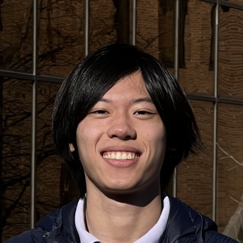

Hi I'm Senhe!
I'm a
Programmer,
a student at
Texas A&M University,
 a
Peer Teacher,
an
Eagle Scout,
and a lifelong learner. My academic interests include algorithms, graphics, AI/ML, networks, and parallel computing. In my free time I enjoy competitive programming, playing the trumpet, cooking, reading, writing, playing video games, and playing as well as GMing tabletop role playing games.
a
Peer Teacher,
an
Eagle Scout,
and a lifelong learner. My academic interests include algorithms, graphics, AI/ML, networks, and parallel computing. In my free time I enjoy competitive programming, playing the trumpet, cooking, reading, writing, playing video games, and playing as well as GMing tabletop role playing games.
My journey with computers started with a digital design class in MIDDLE SCHOOL, where I learned to work with programs to design all sorts of things. Both of my parents did chemistry, so before then the extent of my knowledge was knowing how to draw in Microsoft Paint. The teacher, Chris Lofren, heavily encouraged me to learn as much as I could.
In the year after that, I signed up for his web and game development classes, where I learned how to make websites with html, css ,and javascript as well as make games with Unity. Though back then I barely understood what was going on. As in I thought an array was pointless and variables were all you ever needed to store information.
Only in high school did I start developing an interest in computer science. At the beginning of sophomore year, I wanted to be a particle physicist, but by the end I was dead set on computer science. Over the course of my high school years, I made all sorts of projects by myself and casually participated in UIL computer science. By senior year, a friend and I made an app for the school at the request of the superintendent, although covid made them cancel the program it was supposed to be used for.
In general, I enjoy creating and building things as well as problem solving. The best part is when I get to see my final product in action, with the knowledge that I built that. Which leads to one of my lifelong goals. I want to learn and find as many answers as I can to the endless pile of questions in life.